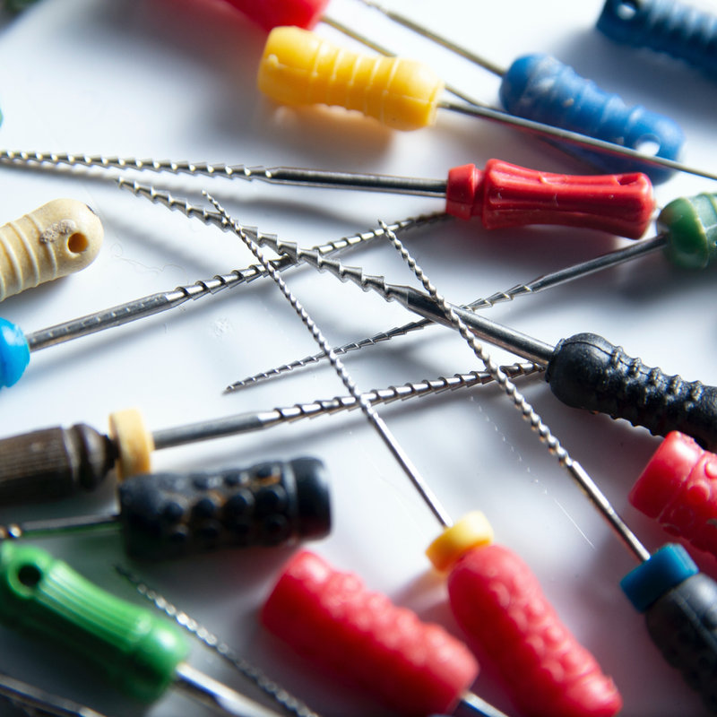
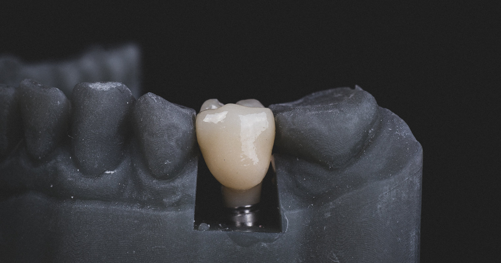
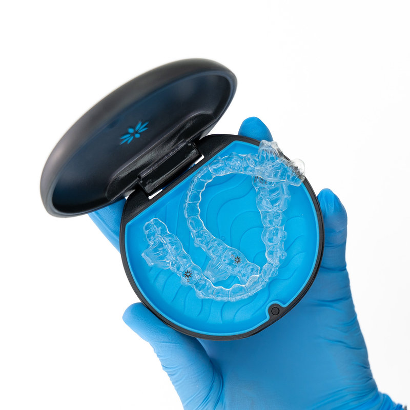
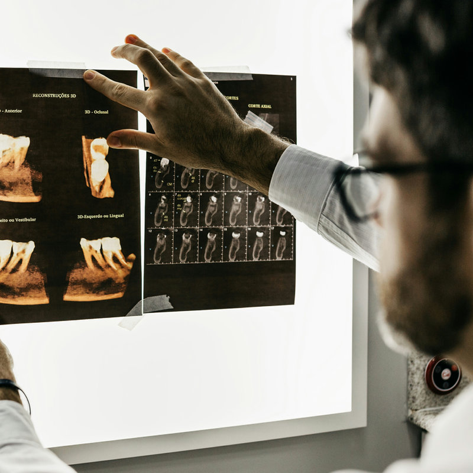
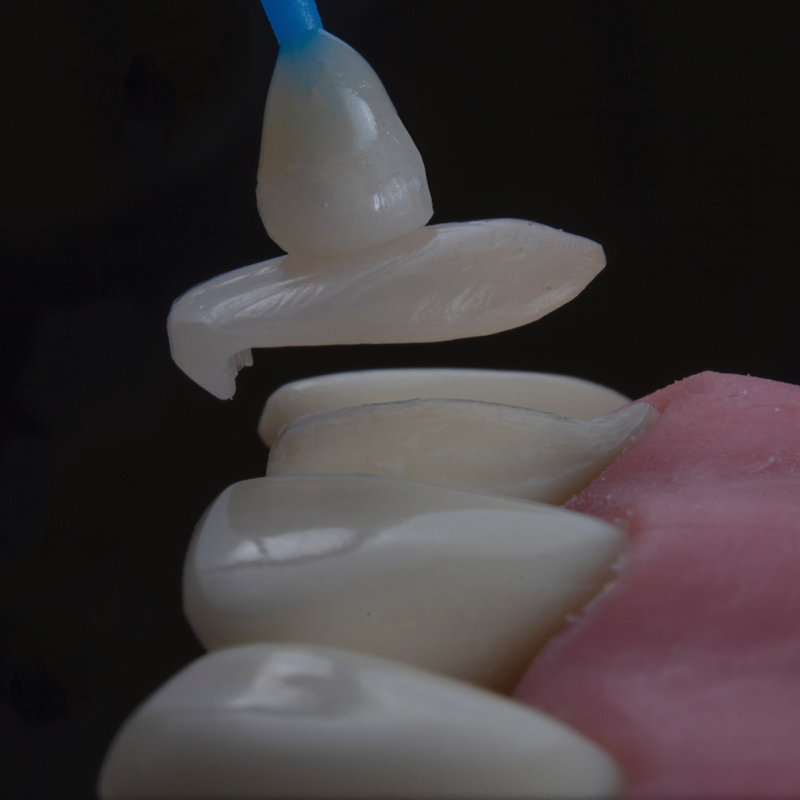
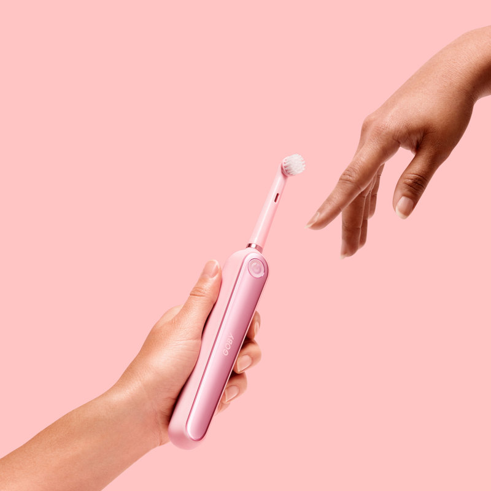
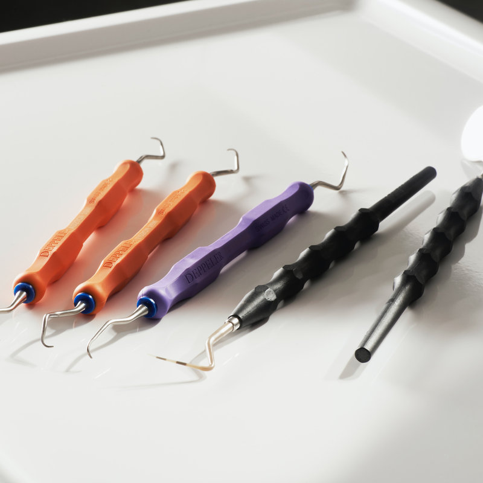

Your Smile, Your Confidence
Dental Treatments at Owl Dental
We provide crowns, restorations, extractions, root canals, Invisalign, dental implants and hygiene services, all with expert care and a gentle touch. Every treatment is personalized, and if specialized care is required we refer you to trusted local experts.

Explore Our Treatments

Dental Implants
Artificial tooth roots, usually made of titanium, that look, feel and function like natural teeth: the most reliable and long-lasting solution for missing teeth.

Invisalign
Straightens teeth comfortably and discreetly using clear aligners, a modern alternative to braces without metal wires or brackets.

Root Canal Treatments
Gently removes infection and restores the tooth from the inside, relieving pain and keeping your natural smile.
Crowns and Veneers
Crowns protect and strengthen damaged teeth; veneers are thin custom shells that fix stains, gaps or misalignment.

Dental Restorations
Composite restorations repair teeth while maintaining a natural appearance, for fillings, veneers and more.

Hygiene
Professional cleanings remove buildup that brushing alone can’t, helping prevent problems and keeping your smile fresh and bright.

Extractions
Sometimes the best step to protect your overall oral health, done with care to keep you comfortable.
What to Expect at Owl Dental
A Skilled, Established Team
A young and enthusiastic team, yet well-established and highly knowledgeable in the latest technologies and treatment techniques available.
Comfort Options
Hygiene and periodontal treatments are available under local anesthesia if preferred, and every extraction and root canal is done with care to keep you comfortable.
Transparent Pricing
Every treatment is on our published price list, with no hidden costs. We participate in the PRSI scheme and eligible treatments qualify for Med 2 tax relief.
Referrals When Needed
If specialized care is required, we offer referrals to trusted local experts for convenient access to comprehensive oral healthcare.
Ready to Take the Next Step?
Not Sure Where to Start?
Book a routine examination: it includes a thorough examination, cancer screening, diagnosis, a personalized treatment plan, and x-rays if necessary. Our team is here to listen and guide you toward the best solution for your smile.